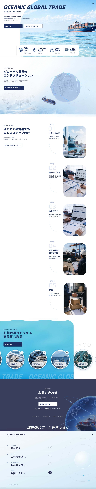
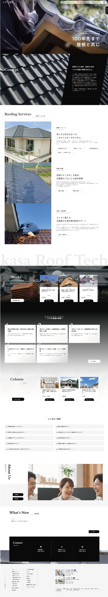
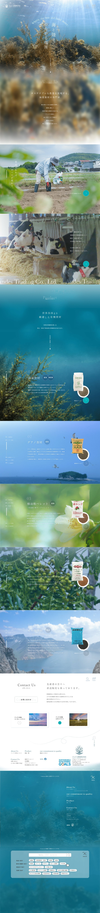
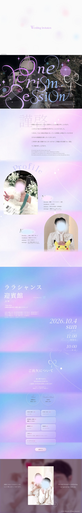

Oceanic Global Trade
船舶用品専門商社 コーポレートサイト(STUDIO・Blender)
← Back(PROJECT No.01) 2026
05ITEMS /
No.01

船舶用品専門商社 コーポレートサイト(STUDIO・Blender)

ツカサ技建 コーポレートサイト(STUDIO・CMS)

アンデス貿易 Webデザイン(デザインのみ)

結婚式 Web招待状(STUDIO)
大分イーブックス 電子書籍ポータルサイト